cafés erkunden in kopenhagen
von elias am donnerstag, 29. Mai 2025
Hier kommt direkt noch mal ein Reisebericht. Ich war in Kopenhagen zu Besuch bei Jana. Alle wissen sowieso schon, dass Kopenhagen eine schöne Stadt ist. Aber im Frühling ist es besonders schön!
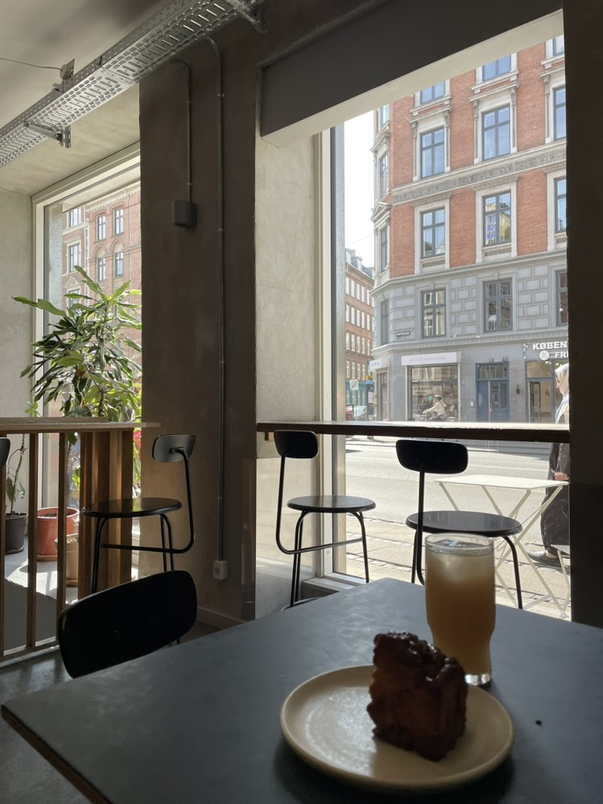
Wie bei jeder guten Reise, weiß ich gar nicht, was ich so gemacht hab. Eigentlich nur gegessen und herumspaziert. Viele Cafébesuche waren auch dabei!
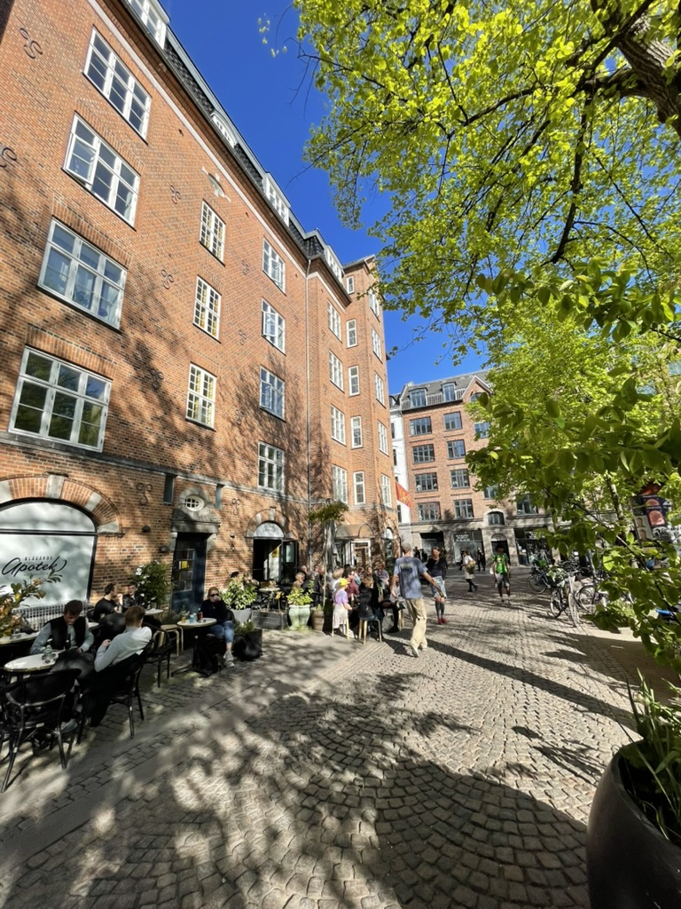
Das Wetter war super und wir saßen einen ganzen Nachmittag draußen vor einer Bar am Blågårds Plads in der Sonne. Perfekt zum Leute beobachten und Sommergefühle genießen. Es war genau so wie Mai sein muss!
Die Sommergefühle waren so stark, dass ich den ganzen nächsten Tag auf der Jagd nach einem lustigen Sommer-Halstuch war. Wir waren auf zwei Floh-Märkten und in einigen verschiedenen Second-Hand Läden. Ich hatte aber kein gutes gefunden.
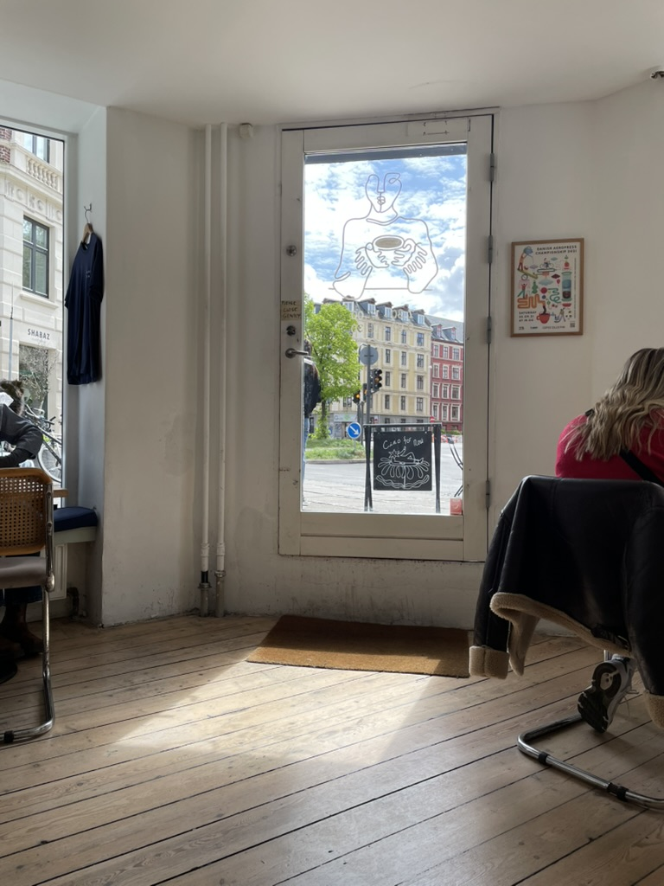 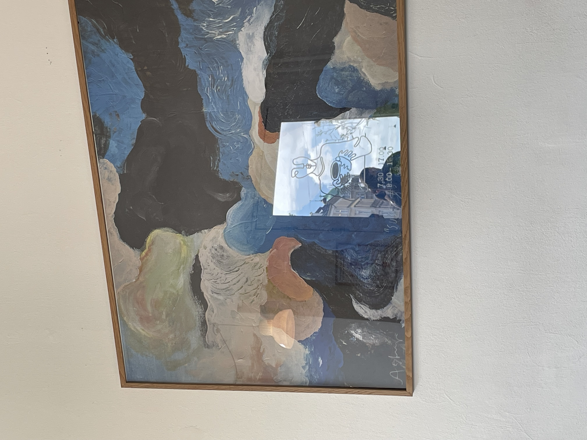
Stattdessen waren wir in Darcy's Kaffe. Hier war super Fotosonne und die Tür hatte sich im Bild gespiegelt. In Echt sah das irgendwie beeindruckender aus aber das Foto ist auch ok.
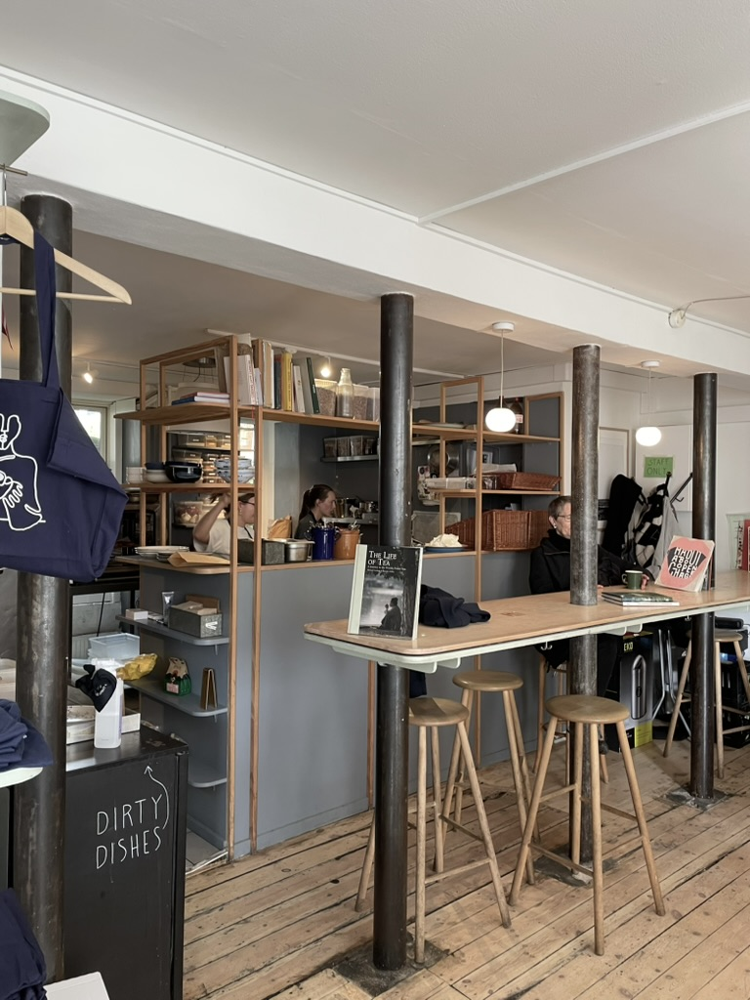
Im Café gabs außerdem diese Küche, die gleichzeitig Regal und Bar war. Ziemlich cool. Ob man sich sowas selbst bauen kann? Wahrscheinlich nicht. Aber ich hatte kurz drüber nachgedacht.
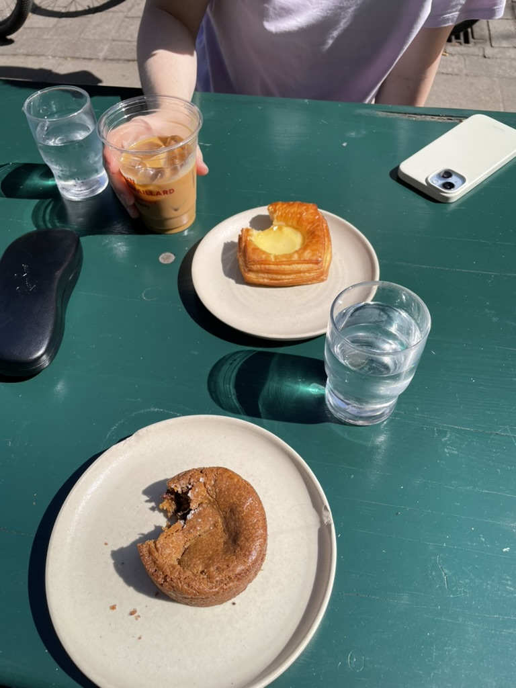
Gebäck hatten wir natürlich auch im Café gegessen. Ich hatte einen Cookie und Jana so ein anderes Teil, das auf englisch danish heißt aber auf deutsch und dänisch irgendwas anderes.
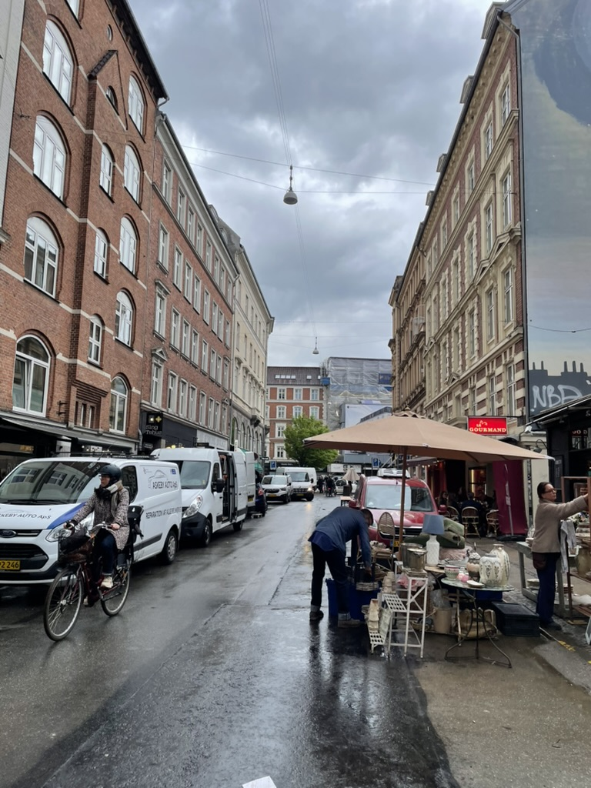 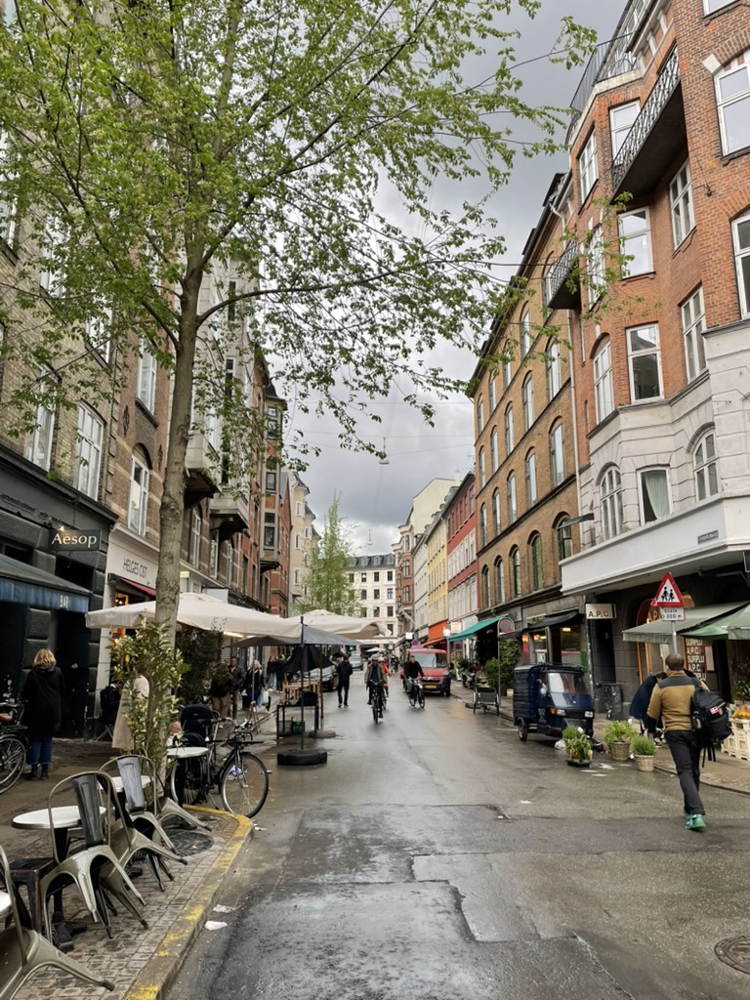
Abends regnete es auch einmal, aber die Stadt sah trotzdem noch super schön aus und die Leute waren immernoch draußen unterwegs.
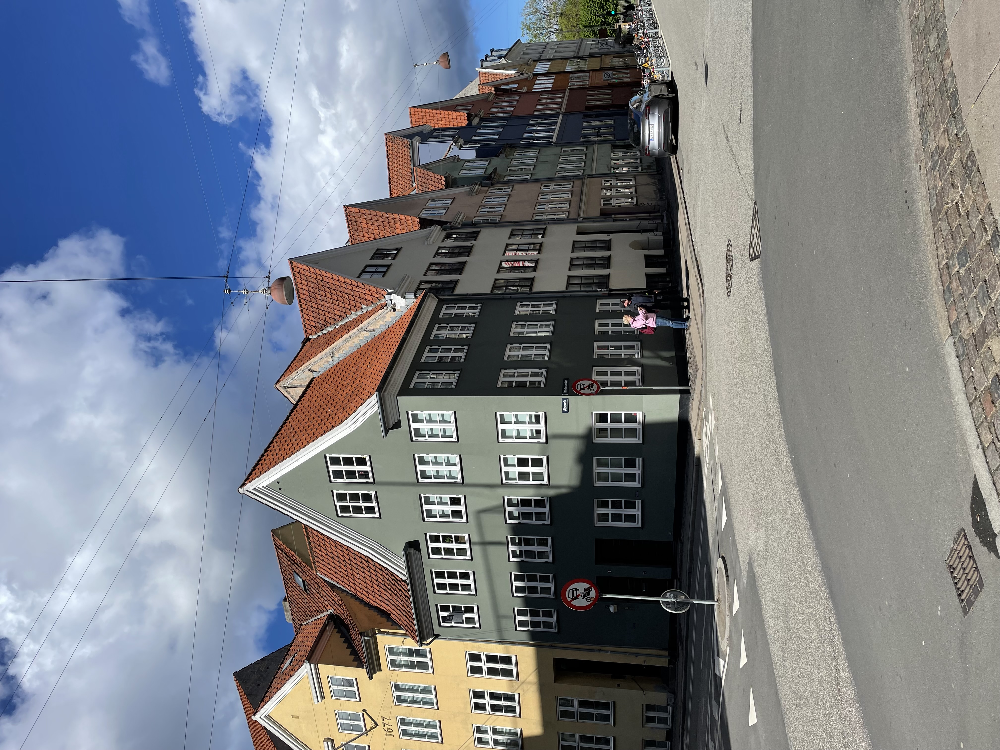 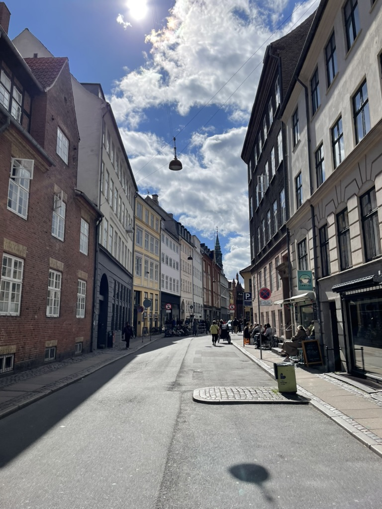
Zum Schluss gab es noch Pommes. Wegen denen hätte ich fast den Zug zurück verpasst. Ich hatte trotzdem noch schnell Fotos von diesen Häusern gemacht. So schön bunt und mit blauem Himmel! Von den Pommes gibts leider kein Bild.
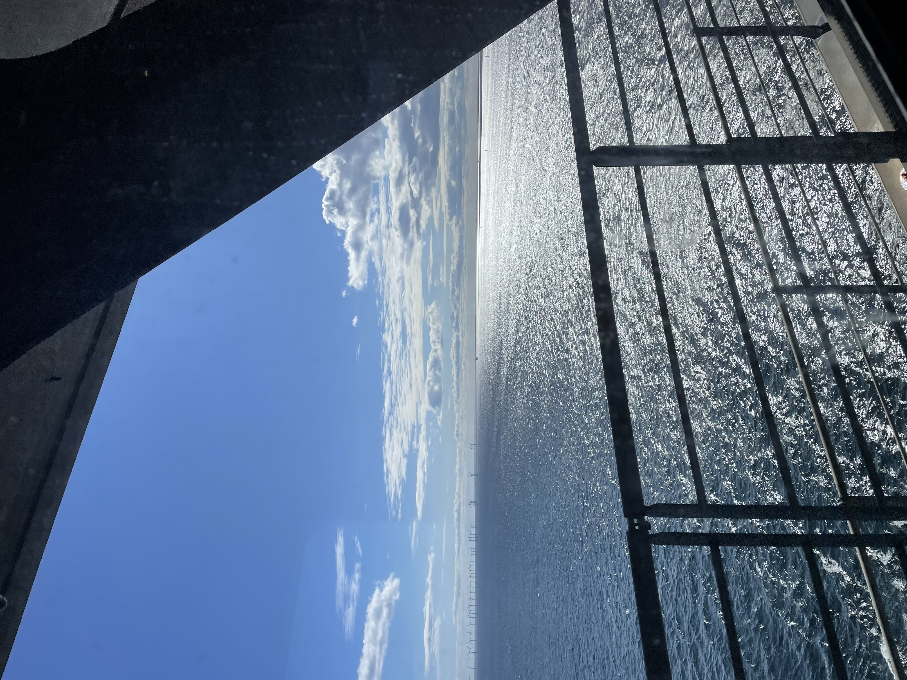
Dann gings auch schon wieder zurück. Mit dem Zug über die große Brücke nach Schweden. Insgesamt nur gegessen und die Stadt erkundet ohne ein Museum gesehen zu haben.